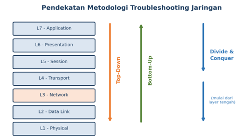
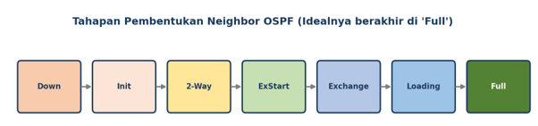
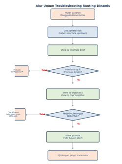

Terdapat beberapa protokol routing dinamis yang umum digunakan pada jaringan, masing-masing memiliki karakteristik dan algoritma yang berbeda. Pemahaman terhadap karakteristik ini penting agar proses troubleshooting dapat dilakukan secara tepat sasaran. Setiap protokol dirancang dengan pendekatan yang berbeda dalam menentukan jalur terbaik, menangani perubahan topologi, dan mengelola routing table. Perbedaan mendasar ini menjadi faktor kunci dalam mengidentifikasi akar permasalahan ketika terjadi gangguan pada jaringan.
| Protokol | Jenis Algoritma | Administrative Distance | Karakteristik Utama |
|---|---|---|---|
| RIP (v1/v2) | Distance Vector | 120 | Metric berdasarkan hop count, maksimal 15 hop, update periodik 30 detik. Sederhana namun memiliki keterbatasan skalabilitas karena batas hop yang kecil dan waktu konvergensi yang relatif lambat. |
| OSPF | Link State | 110 | Metric berdasarkan cost/bandwidth, mendukung area, konvergensi cepat. OSPF membangun peta topologi lengkap menggunakan Link State Database (LSDB) dan menjalankan algoritma Dijkstra untuk menghitung jalur terpendek, sehingga sangat andal untuk jaringan berskala besar. |
| EIGRP | Advanced Distance Vector | 90 | Metric komposit (bandwidth & delay), konvergensi sangat cepat (DUAL). EIGRP menggabungkan keunggulan distance vector dan link-state dengan menyimpan informasi feasible successor sehingga dapat langsung beralih ke jalur cadangan tanpa perlu melakukan perhitungan ulang yang memakan waktu. |
Troubleshooting adalah proses sistematis untuk mengidentifikasi, menganalisis, dan menyelesaikan masalah pada suatu sistem. Dalam konteks jaringan komputer, troubleshooting dilakukan untuk menemukan penyebab gangguan konektivitas atau kegagalan fungsi routing, kemudian memperbaikinya agar jaringan kembali berjalan normal. Keberhasilan proses troubleshooting sangat bergantung pada pemahaman mendalam tentang arsitektur jaringan, protokol yang digunakan, serta kemampuan dalam menginterpretasikan informasi dari berbagai perintah diagnosis.
Terdapat tiga pendekatan umum yang biasa digunakan dalam troubleshooting jaringan berdasarkan lapisan model OSI (Open Systems Interconnection):

Proses troubleshooting yang efektif biasanya mengikuti langkah-langkah sistematis yang telah terbukti berhasil dalam praktik di lapangan. Berikut adalah enam langkah umum yang dapat dijadikan panduan:
show ip interface brief, show ip route, dan show ip protocols untuk mendapatkan gambaran menyeluruh tentang status terkini jaringan.Beberapa permasalahan yang sering dijumpai pada implementasi routing dinamis di lapangan antara lain sebagai berikut. Setiap permasalahan memiliki karakteristik dan penyebab yang berbeda, sehingga memerlukan pendekatan troubleshooting yang spesifik.
Dua router yang seharusnya saling bertetangga (neighbor) tidak dapat membentuk hubungan routing. Hal ini umum terjadi pada protokol berbasis link-state seperti OSPF yang sangat bergantung pada pembentukan hubungan adjacency untuk menukarkan informasi topologi. Tanpa neighbor yang terbentuk, router tidak akan pernah menerima informasi rute dari router lain yang berada di sisi tersebut.
Jaringan tujuan tidak muncul pada tabel routing meskipun koneksi fisik dan protokol sudah dikonfigurasi. Kondisi ini dapat menyebabkan router tidak mengetahui cara mencapai jaringan tertentu, sehingga paket data tidak dapat diteruskan ke tujuan yang diinginkan.
network. Jika ada jaringan yang terlewat, jaringan tersebut tidak akan diketahui oleh router lain.Routing loop terjadi ketika paket data berputar terus-menerus di antara beberapa router tanpa pernah mencapai tujuan, sehingga menyebabkan pemborosan bandwidth dan penurunan kinerja jaringan secara signifikan. Fenomena ini dapat menyebabkan Time-to-Live (TTL) paket habis dan paket tersebut dibuang, sehingga komunikasi antar jaringan menjadi terhambat.
Konvergensi adalah kondisi ketika seluruh router pada jaringan memiliki informasi routing table yang konsisten dan identik. Konvergensi yang lambat menyebabkan jaringan rentan terhadap routing loop dan paket yang hilang (packet loss) selama proses pembaruan berlangsung. Pada periode ini, router mungkin memiliki pandangan yang berbeda tentang topologi jaringan, sehingga keputusan routing menjadi tidak optimal atau bahkan salah. Faktor-faktor seperti ukuran jaringan, jumlah router, dan protokol yang digunakan sangat mempengaruhi kecepatan konvergensi.
Redistribusi rute digunakan ketika suatu jaringan menjalankan lebih dari satu protokol routing sekaligus. Kesalahan pada konfigurasi redistribusi dapat menyebabkan sebagian rute tidak diteruskan antarprotokol atau menimbulkan routing loop antarprotokol. Misalnya, jika redistribusi dari OSPF ke RIP tidak dikonfigurasi dengan benar, rute yang berasal dari OSPF mungkin tidak pernah sampai ke jaringan yang hanya menggunakan RIP. Selain itu, redistribusi yang tidak hati-hati dapat menimbulkan routing loop yang sangat sulit dilacak karena melibatkan dua protokol yang berbeda dengan mekanisme pencegahan loop yang berbeda pula.
Berikut adalah beberapa perintah yang umum digunakan untuk melakukan diagnosis dan troubleshooting routing dinamis pada perangkat router berbasis Cisco IOS. Perintah-perintah ini memberikan informasi penting yang dapat digunakan untuk mengidentifikasi akar permasalahan dan menentukan langkah perbaikan yang tepat.
| Perintah | Fungsi |
|---|---|
show ip interface brief |
Menampilkan status interface (up/down) dan alamat IP secara ringkas. Perintah ini adalah langkah pertama yang sangat penting untuk memastikan semua interface yang seharusnya aktif dalam kondisi up/up. |
show ip route |
Menampilkan tabel routing yang aktif pada router. Perintah ini menunjukkan semua rute yang dikenal oleh router, termasuk rute langsung, statis, dan dinamis beserta sumbernya. |
show ip protocols |
Menampilkan protokol routing yang berjalan beserta parameternya seperti versi, timer, dan jaringan yang di-advertise. Informasi ini sangat berguna untuk memverifikasi apakah konfigurasi protokol sudah sesuai dengan yang diinginkan. |
show ip ospf neighbor |
Menampilkan status neighbor OSPF dan state-nya. Perintah ini menunjukkan apakah hubungan adjacency telah terbentuk sempurna (status FULL) atau masih dalam tahap awal (seperti 2WAY atau EXSTART). |
show ip rip database |
Menampilkan basis data rute RIP. Perintah ini berguna untuk melihat rute yang diketahui oleh RIP sebelum dimasukkan ke tabel routing. |
show ip eigrp neighbors |
Menampilkan daftar tetangga EIGRP yang terbentuk. Informasi ini penting untuk memastikan hubungan neighbor EIGRP berfungsi dengan baik. |
debug ip routing |
Menampilkan proses perubahan routing table secara real-time. Perintah ini sangat bermanfaat untuk melacak bagaimana rute ditambahkan atau dihapus dari tabel routing, namun harus digunakan dengan hati-hati pada jaringan produksi karena dapat membebani CPU router. |
ping / traceroute |
Menguji konektivitas dan menelusuri jalur paket menuju tujuan. Kedua perintah ini adalah alat dasar namun sangat ampuh untuk menguji apakah komunikasi end-to-end berfungsi dan untuk mengidentifikasi titik kegagalan di sepanjang jalur. |
show running-config |
Menampilkan konfigurasi router yang sedang aktif. Perintah ini memungkinkan administrator untuk memeriksa keseluruhan konfigurasi dan mencari kemungkinan kesalahan atau ketidaksesuaian. |
show ip ospf neighborRouter# show ip ospf neighbor
Neighbor ID Pri State Dead Time Address Interface
2.2.2.2 1 FULL/BDR 00:00:39 10.0.0.2 Gi0/0
3.3.3.3 1 2WAY/DROTHER 00:00:35 10.0.0.3 Gi0/0Pada contoh di atas, status FULL menunjukkan neighbor telah berhasil melakukan sinkronisasi basis data link-state secara sempurna, sehingga router memiliki pandangan topologi yang sama dan siap untuk menghitung jalur terbaik. Status 2WAY menandakan hubungan baru terbentuk sebatas pertukaran paket Hello dan belum mencapai sinkronisasi penuh. Jika status neighbor tetap berada pada 2WAY atau EXSTART untuk waktu yang lama, maka kemungkinan besar ada masalah pada pertukaran informasi Database Descriptor (DBD).

Untuk memudahkan proses diagnosis, troubleshooting routing dinamis sebaiknya dilakukan secara bertahap mengikuti alur berikut, dimulai dari pemeriksaan lapisan fisik hingga pengujian konektivitas end-to-end. Pendekatan sistematis ini memastikan bahwa tidak ada langkah penting yang terlewat dan membantu mempersempit area pencarian masalah secara efisien.
Alur yang disarankan adalah sebagai berikut: pertama, periksa kondisi fisik jaringan (interface up/up, kabel terhubung). Kedua, verifikasi konfigurasi IP dan subnet pada setiap interface. Ketiga, periksa konfigurasi protokol routing (apakah network sudah di-advertise, apakah timer konsisten). Keempat, periksa status neighbor dan adjacency. Kelima, periksa routing table untuk memastikan rute yang diharapkan muncul. Keenam, lakukan pengujian konektivitas dengan ping dan traceroute. Jika masih ditemukan masalah, ulangi proses dengan fokus pada area yang dicurigai.

Sebuah jaringan menggunakan protokol RIPv2 pada tiga router (R1, R2, R3). Setelah konfigurasi selesai, jaringan yang terhubung pada R3 tidak muncul pada routing table R1. Gejala ini mengindikasikan bahwa ada masalah pada penyebaran informasi rute di jaringan, sehingga R1 tidak mengetahui cara mencapai jaringan di balik R3.
show ip interface brief pada seluruh router untuk memastikan interface aktif (up/up). Jika ada interface yang down, maka update routing tidak akan dapat dikirim atau diterima melalui interface tersebut.